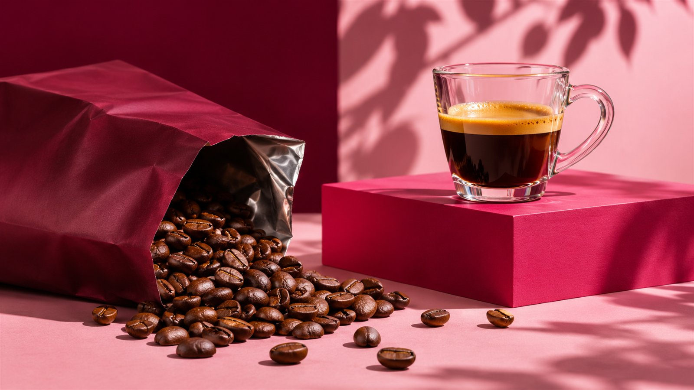
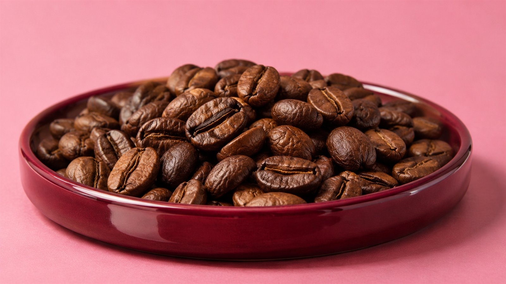
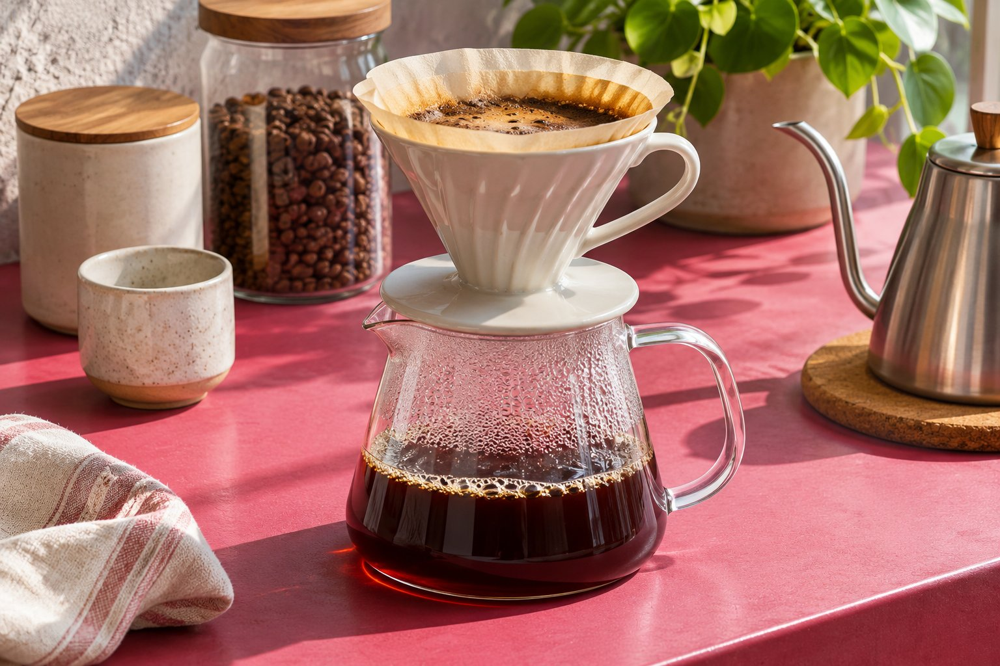

Шоколадный
Плотный, округлый, с ореховым послевкусием.
Шоколадный, ягодный или фруктовый — выбирайте профиль, а затем способ заваривания.

Пример — концепт для портфолио. Лоты, вкусовые описания и цены демонстрационные. Дата обжарки в реальном заказе указывается на пачке.
Дескрипторы — ассоциации, а не добавки. Вкус зависит от воды, помола и вашего рецепта.
Плотный, округлый, с ореховым послевкусием.
Яркий, сочный, с заметной фруктовой кислотностью.

Начните с этого соотношения и меняйте по одному параметру. Цифры — пример рецепта, а не правило для каждого зерна.

Плотно закрывайте пачку, держите её вдали от света и тепла. Мелите перед приготовлением, если пользуетесь кофемолкой.